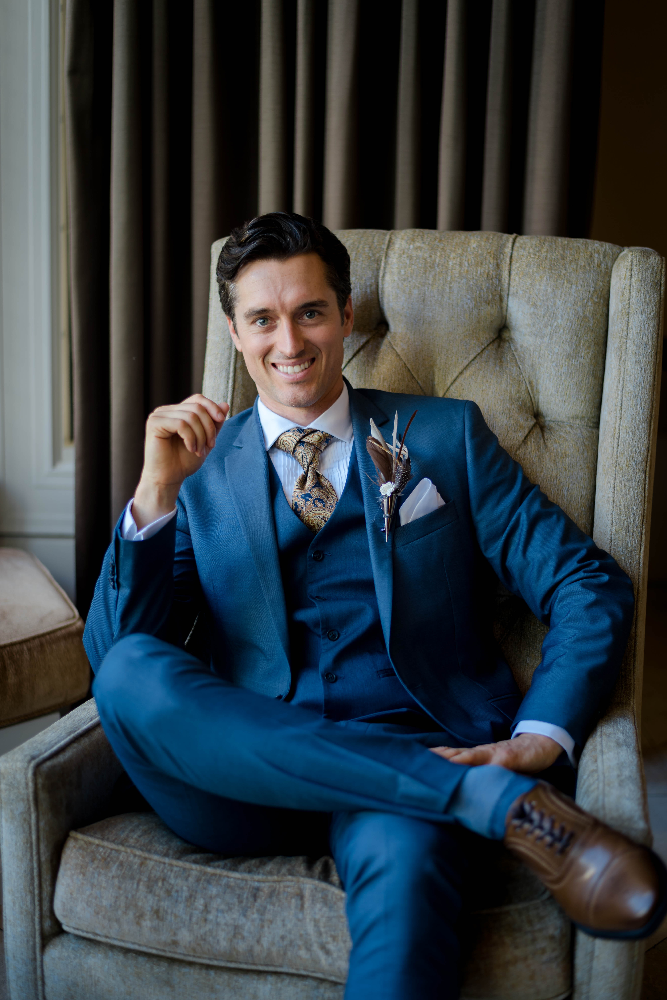

Software Engineer
A lot goes into brainstorming a new idea and drawing out a plan to accomplish the idea you have in your head. During my time with General Assembly, I worked a lot with CSS and javascript to make every project stand out. I also used a few platforms to make my projects extra special. I was able to use Figma, which makes developing projects easier because it paints a picture for how things will look and possibly function. The other platform I have used is bootstrap, which made life a little easier when creating cards and carousels. When you are the lead on both the design and development side of things, you need to have a good sense of time and a good eye for design. I have a great sense of time and have always finished my projects on time and enjoy working in groups, which is why my goal is to manage a group of developers.
Building sites that are seen my thousands, if not millions of people is exciting, and that is one of the reasons why I enjoy building E-Commerce sites. The artistic side is able to come out while buidling these type of sites, giving me freedom to do what looks nice and what types of functional components I like to build, while staying within the clients needs. There is a certain joy when working with clients, setting up meetings and chatting about how the project is going, maybe throwing in some ideas on how the project could improve. A lot of thought goes into the user experience with E-Commerce sites, which is why they are a joy to build, so many moving parts.
Backend development is the one side of programming that is not fully appreciated by your typical webpage user. They see the pretty stuff up front and how good the UX is. They don't understand the complexity that is involved in order to make an application work the way it is intended. In my E-commerce project, I was able to create a searchable API, which allows the user to search for a specific product and it directs straight to the products page. I have worked with multiple languages like: Ruby, Ruby on Rails, python, Java, MySQL, SQL.
Software Engineer based out of CA
When you are trying to sum up the about me section in a short paragraph, it becomes clear what points you are wanting to get across to the reader. Accomplishment is my about me summed up, each and every accomplishment starts with the decision to try. Whether I succeed or fail at what I have set forth to accomplish, at least I tried my hardest. I have always enjoyed setting goals for myself and accomplishing them, whether through a successful outcome or a learning experience because of failure. With programming, you get that sense of accomplishment pretty instantaneous. Your code either works or doesn't, and that is what I enjoy about it.
Creative building is my passion and programming is built entirely around being able to build projects or create code while having a creative mindset. With creative design, challenge follows right behind it, along with change. I feel having a career that challenges you daily brings a certain type of excitement that keeps things interesting and new. Change is also something that can be exciting and I enjoy the adventurous side of change.
Lastly is the ability to change peoples lives through the use of an application I had a hand in building. It's that feeling of waking up every morning and thinking the future is going to be great and how I want to be part of that future through developing apps and technology.
A selection of my range of work